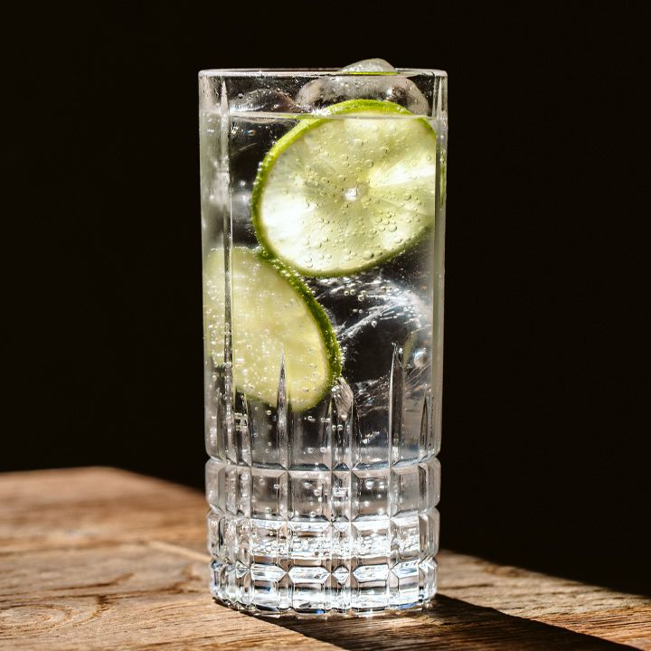
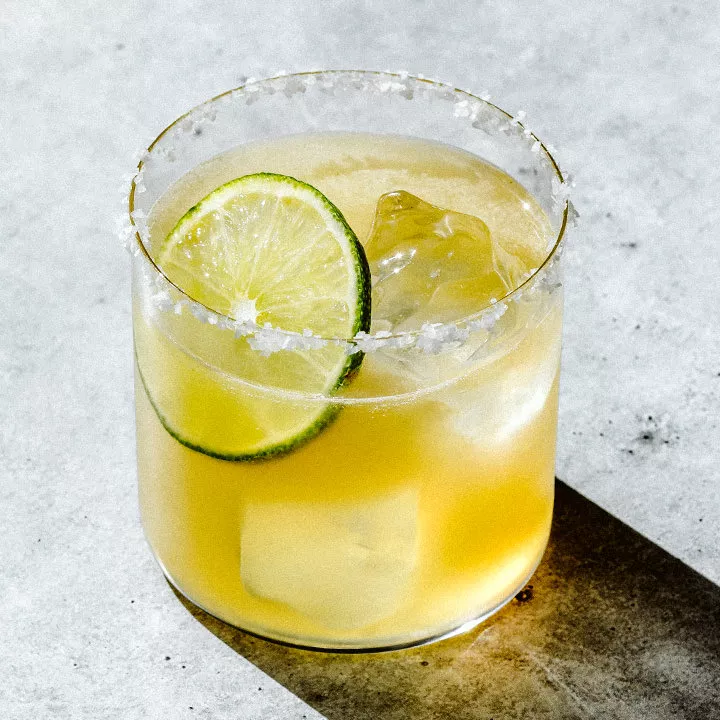

Gin and Juice!

- 1.5 oz gin
- 4 oz orange juice
Using a jigger, measure 1.5 oz of gin and pour into a tall glass over ice cubes. Top up with 4 oz orange juice.
Gin and Tonic!
- 1.5 oz gin
- 4 oz tonic water
Using a jigger, measure 2 oz of gin and pour into a tall glass over ice cubes. Top up with 4 oz tonic water.
Vodka Tonic!
- 2 oz of vodka
- 4 oz of tonic water
Using a jigger, measure 2 oz of vodka and pour into a tall glass over ice cubes. Top up with 4 oz tonic water.
Screwdriver!

- 2 oz of vodka
- 4 oz of tonic water
Using a jigger, measure 2 oz of vodka and pour into a tall glass over ice cubes. Top up with 4 oz tonic water.
Rum and Coke!
- 2 oz of rum
- 4 oz of cola
Using a jigger, measure 2 oz of rum and pour into a tall glass over ice cubes. Top up with 4 oz cola.
Rum Tonic!
- 2 oz of rum
- 4 oz of tonic water
Using a jigger, measure 2 oz of rum and pour into a tall glass over ice cubes. Top up with 4 oz tonic water. Optional garnishes: cinnamon stick, lime wedge, ginger slice.
Margarita!
- 2 oz tequila
- 1/2 oz orange liqueur
- 1 oz lime juice
Using a jigger, measure 2 oz of tequila, 1/2 oz of orange liqueur, and 1 oz of lime juice into a shaker with ice cubes and shake until chilled. Pour into a glass over fresh ice. Optional garnishes: salt rim, lime wedge.
Tequila Sunrise!
- 2 oz tequila
- 4 oz orange juice
- 1/4 oz grenadine
Using a jigger, measure 4 oz of tequila and 4 oz of orange juice into a highball glass with ice and stir. Top off with 1/4 oz of grenadine and let sink to the bottom of the glass creating the sunrise effect. Optional garnishes: cherry, orange wedge.
Sorry no cocktail found...
Please try selecting different ingredients.